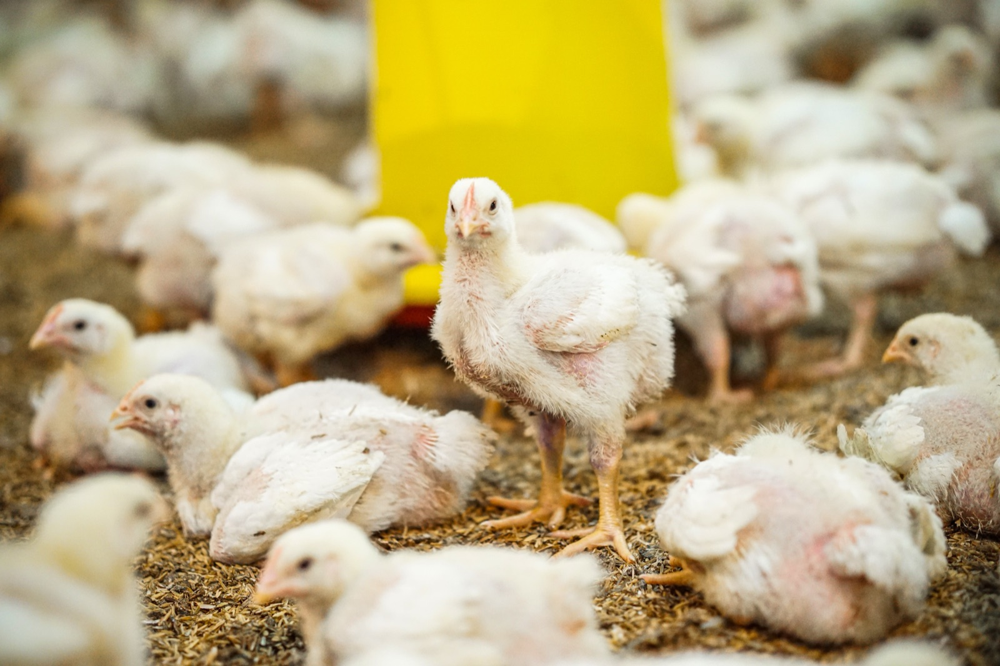
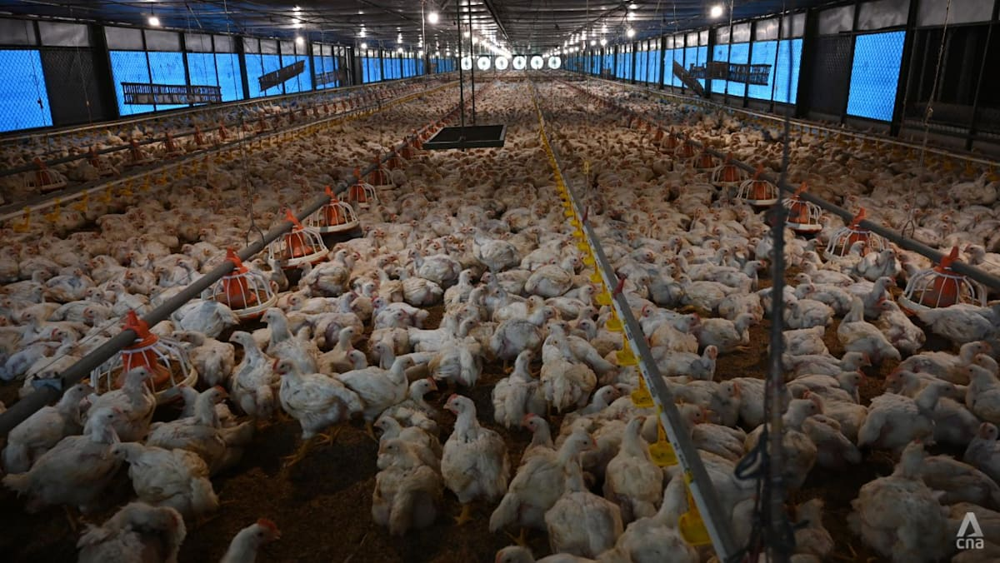
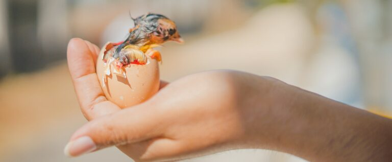
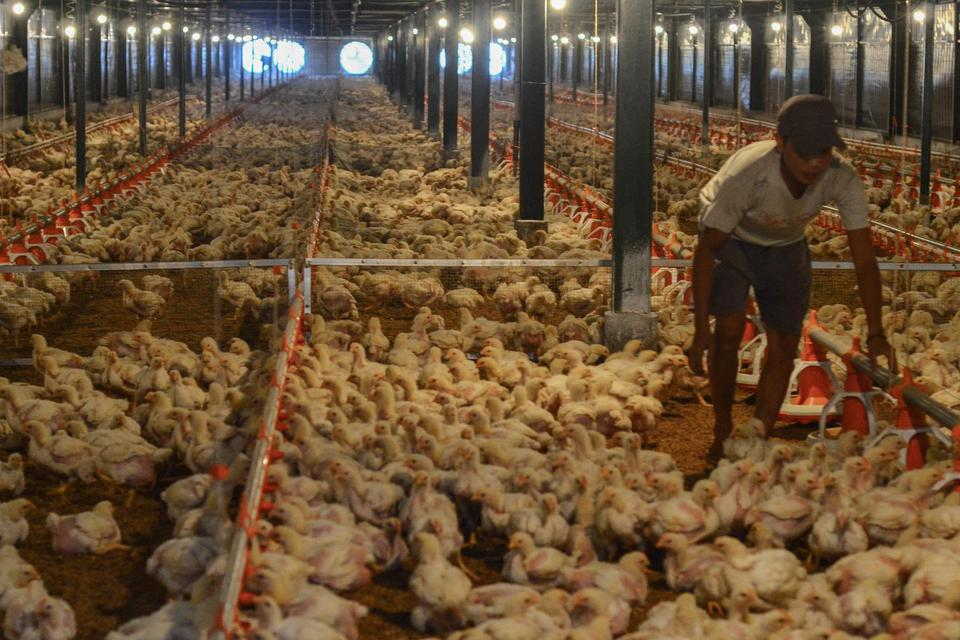
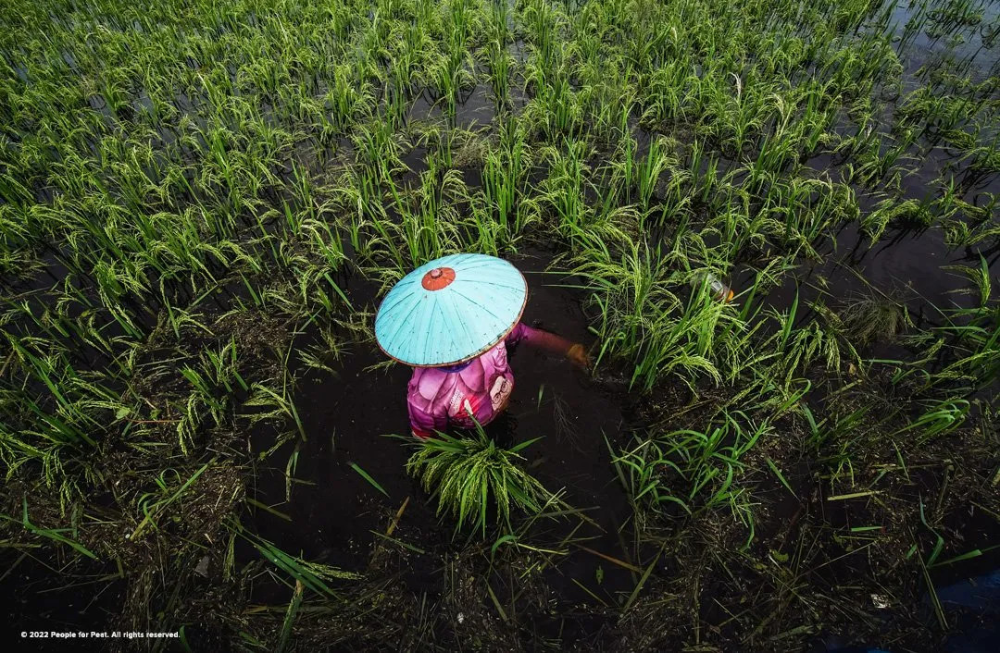

An agritech partnership, landed in one month
A tight, one-month campaign to raise awareness of Pitik's collaboration with PT Charoen Pokphand Indonesia, the country's largest poultry producer.

Inside Pitik's smart farms.
From the campaign, on the record.
Smart farming, big partner, short window.
Pitik, an agritech startup in the livestock sector, wanted to raise awareness of its collaboration with PT Charoen Pokphand Indonesia (CPI). Despite a tight one-month timeframe, the campaign secured a segment on CNA, an in-depth industry piece in The Ken, and coverage of Pitik's milestones.
Meaningful coverage, fast.
With only a month, the challenge was to secure coverage that highlighted Pitik's partnership with CPI and its smart-farming technology, across a mix of mainstream and industry-specific outlets.
Quality over quantity.
We built a focused outreach plan around the most valuable opportunities.
- High-impact opportunities like a TV segment on CNA
- In-depth industry coverage in titles like The Ken
- Milestone-driven hooks to create timely news
A CNA segment and The Ken, inside a month.
In a single month, the campaign delivered 15 placements, including a CNA segment and an in-depth piece in The Ken, with an estimated $183K in ad value.
Where it ran.
Broadcast and industry titles across the region. Every link is live.

Indonesian start-ups seek to modernise agriculture Read ↗
Indonesia's smallholder chicken farmers band together Read ↗
Pitik gaet Charoen Pokphand untuk digitalisasi peternakan ayam Read ↗
 Smart farming: RI agritech offers smallholders a helping hand
Read ↗
Pitik gandeng Charoen Pokphand Indonesia
Read ↗
Smart farming: RI agritech offers smallholders a helping hand
Read ↗
Pitik gandeng Charoen Pokphand Indonesia
Read ↗